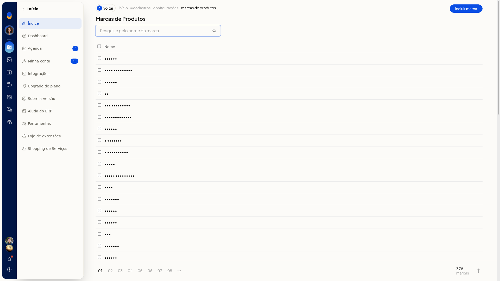
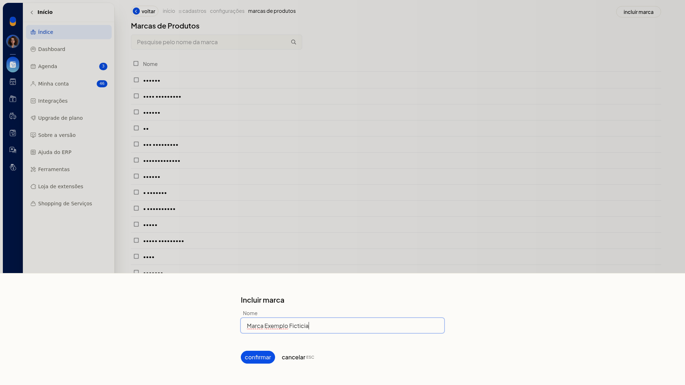
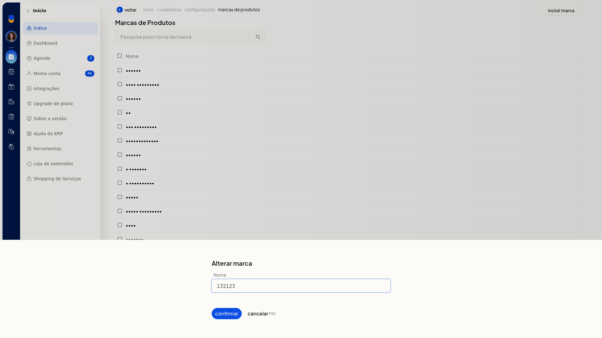

Marcas dos produtos
No ERP da Olist, as marcas são um cadastro auxiliar da ficha do produto. Você consulta a lista, inclui uma marca e altera o nome de uma marca já cadastrada.
O cadastro fica em Configurações > Cadastros, nas configurações de marcas de produtos.
Instruções
-
Acesse Configurações > Cadastros.
-
Abra as configurações de marcas de produtos.
-
Na lista, use a pesquisa para localizar uma marca pelo nome, se precisar.

-
Clique em Incluir marca.
-
Digite o Nome. O campo não exibe marcador de obrigatório.

-
Clique em Confirmar para gravar a marca. Cancelar fecha o painel sem gravar.
Para alterar uma marca já cadastrada:
-
Na lista de marcas, abra Alterar marca.
-
O painel mostra o mesmo campo Nome. Ajuste o nome.

-
Clique em Confirmar para gravar. Cancelar fecha o painel sem gravar.
Informações adicionais
- A lista tem pesquisa, a coluna Nome e paginação.
- A tela de marcas não oferece importação por planilha.